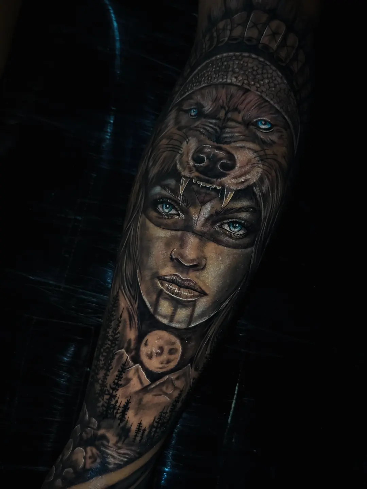
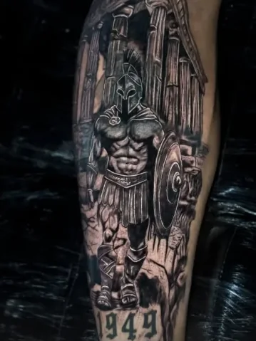
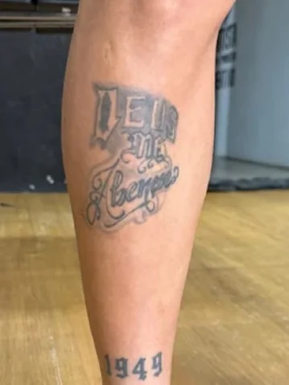
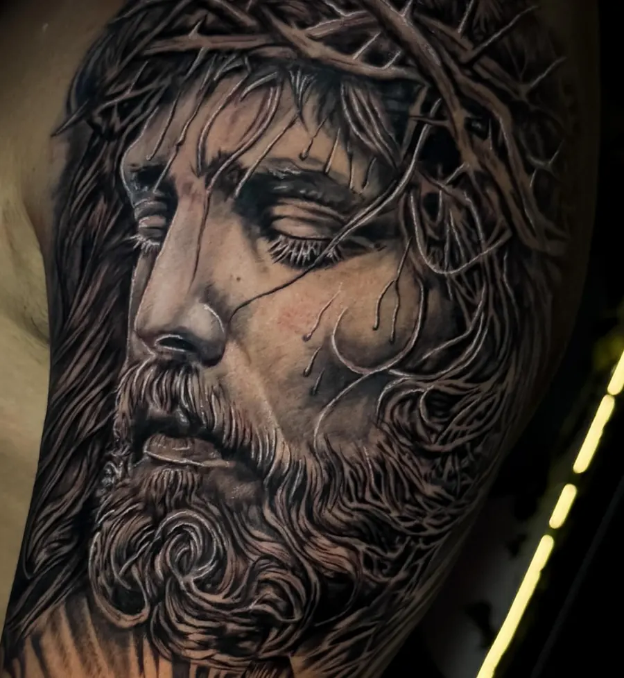
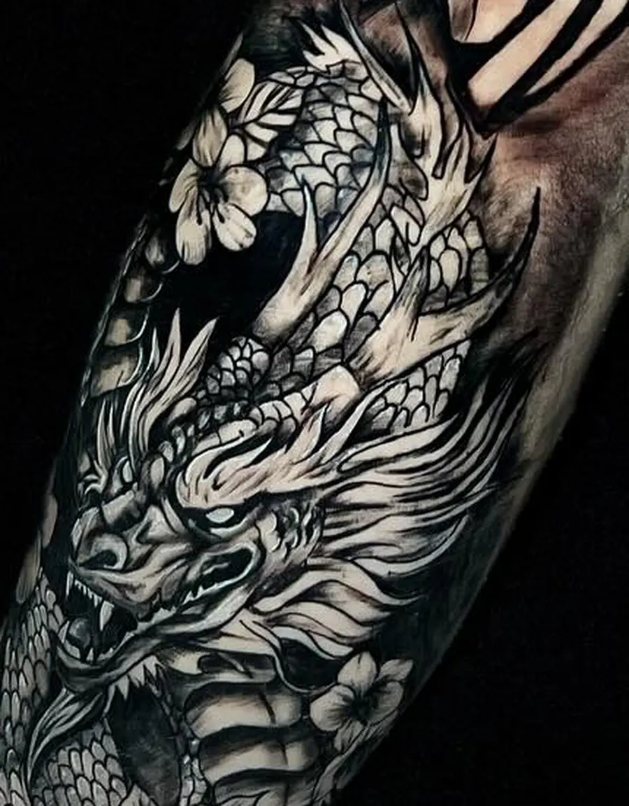
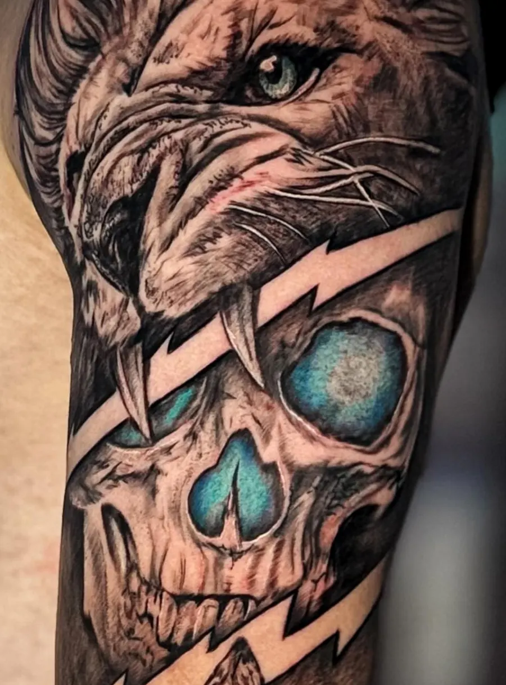
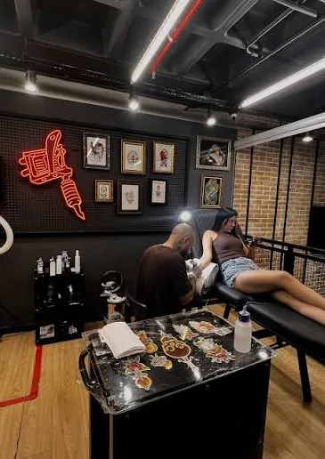

Realismo que nasce da sua ideia.
Lucas Rafael · LR7 Tattoo · Solânea e Bananeiras/PB
Realismo, cobertura e florais, com projetos desenhados junto com quem vai levar a arte na pele.
Trabalhos reais, vistos de perto.
Fechamentos de braço e perna em preto e cinza, com detalhes de cor onde a composição pede. Toque numa obra para ampliar.
Uma nova história na pele
Arraste a divisória para comparar o antes e o depois.
Fotos de dias diferentes, alinhadas pela própria tatuagem. Registros dos destaques do Instagram do Lucas.


Espartano na perna. Guerreiro e templo desenhados sobre um lettering antigo.
Seu projeto, desenhado com você.
Nas legendas do Lucas a ideia se repete: a tatuagem é adaptada à história de quem vai levá-la. Você traz a referência, ele pensa a composição para o seu corpo.
Retratos, animais e figuras com volume, textura e contraste em preto e cinza, às vezes com um acento de cor.
Um projeto novo pensado para cobrir ou corrigir uma tatuagem antiga. Mande uma foto dela no orçamento.
Ver antes e depoisFlores que entram como detalhe de composições maiores, como no fechamento oriental.


Como começa
- Conte a ideia.Chame o Lucas no WhatsApp com o que você imagina.
- Mostre o contexto.Referências, fotos e o local do corpo ajudam a pensar a composição.
- Receba o orçamento.Os valores são passados por orçamento, no próprio WhatsApp.

Lucas Rafael
Tatuador em Solânea e Bananeiras/PB, com mais de seis anos de experiência segundo o próprio perfil. Trabalha realismo, cobertura e florais e assina fechamentos de braço e perna em preto e cinza, com pequenos acentos de cor.
Trabalhos recentes e vídeos de processo ficam no Instagram.
@lr7tattoo no InstagramVamos desenhar a sua ideia?
Chame o Lucas no WhatsApp com a sua ideia, a região do corpo e referências, se tiver. O orçamento sai por lá.

Atende em Solânea e Bananeiras/PB. Para endereço e horários, pergunte pelo WhatsApp.